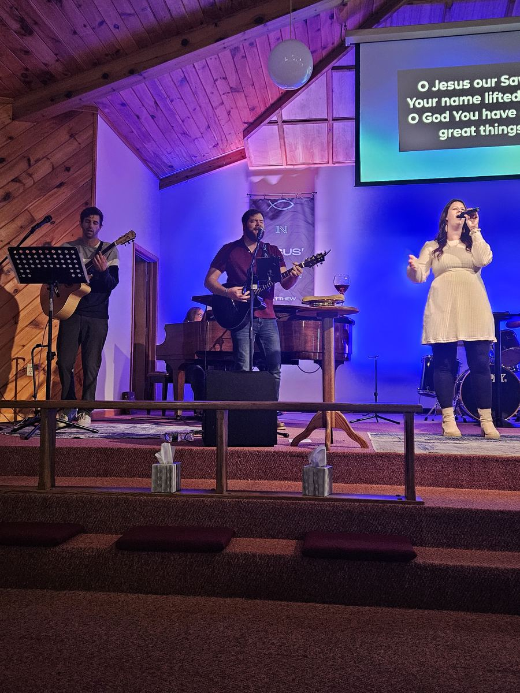
Sundays
Worship
Every Sunday at 10:00 AM — music, Bible teaching, and time together.
Stanwood, Michigan · Free Methodist
Where life comes to life
Our mission
To reach people with the message of Jesus.
Everything we do at The Woods starts there. For more than a hundred years, this Free Methodist church has been part of Stanwood — a place to learn about Jesus and to get to know the neighbors around you.
Whether you are new to faith, coming back after time away, or have been here for years, you are welcome.
Come as you are.
Learn more about us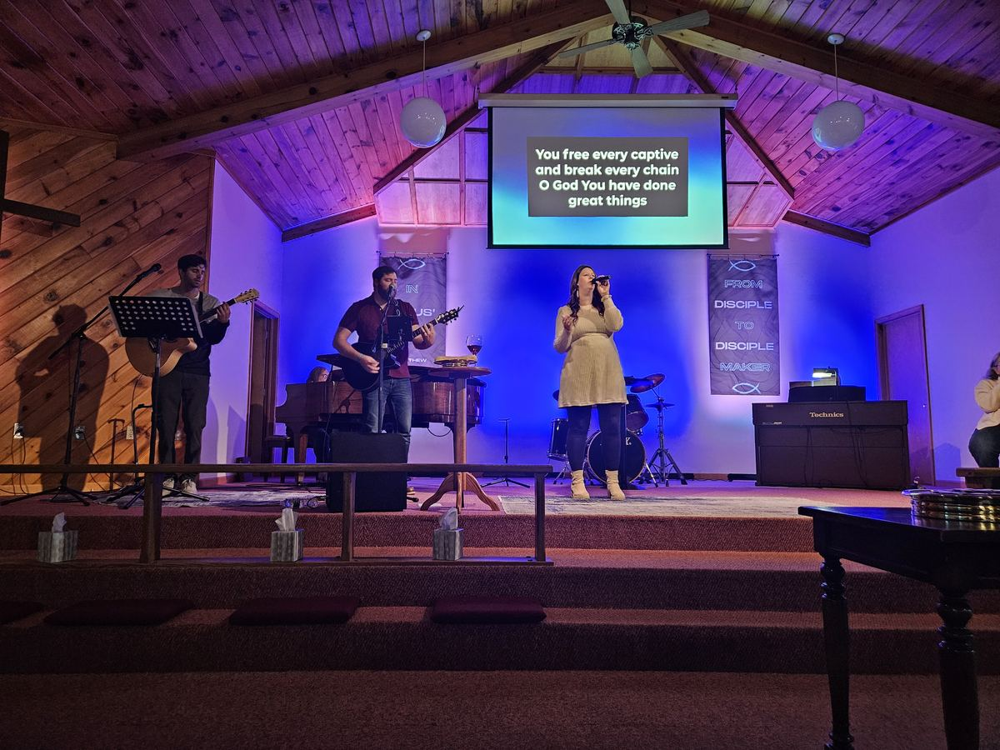
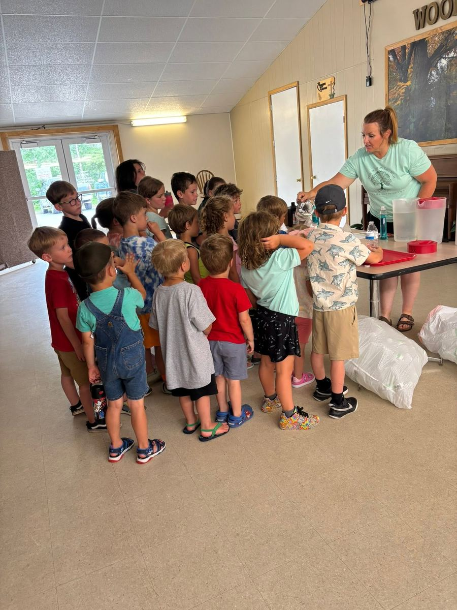
Ministries
From kids to lifelong members, there’s a way to grow with us all week long.

Every Sunday at 10:00 AM — music, Bible teaching, and time together.
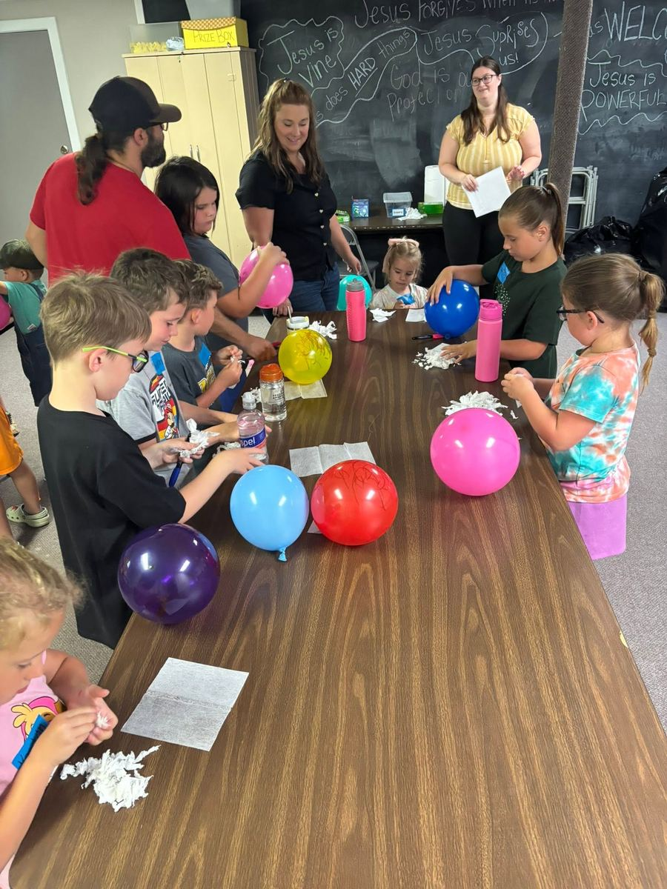
Go Kids during Sunday worship, and Kingdom Kids on Wednesday nights.
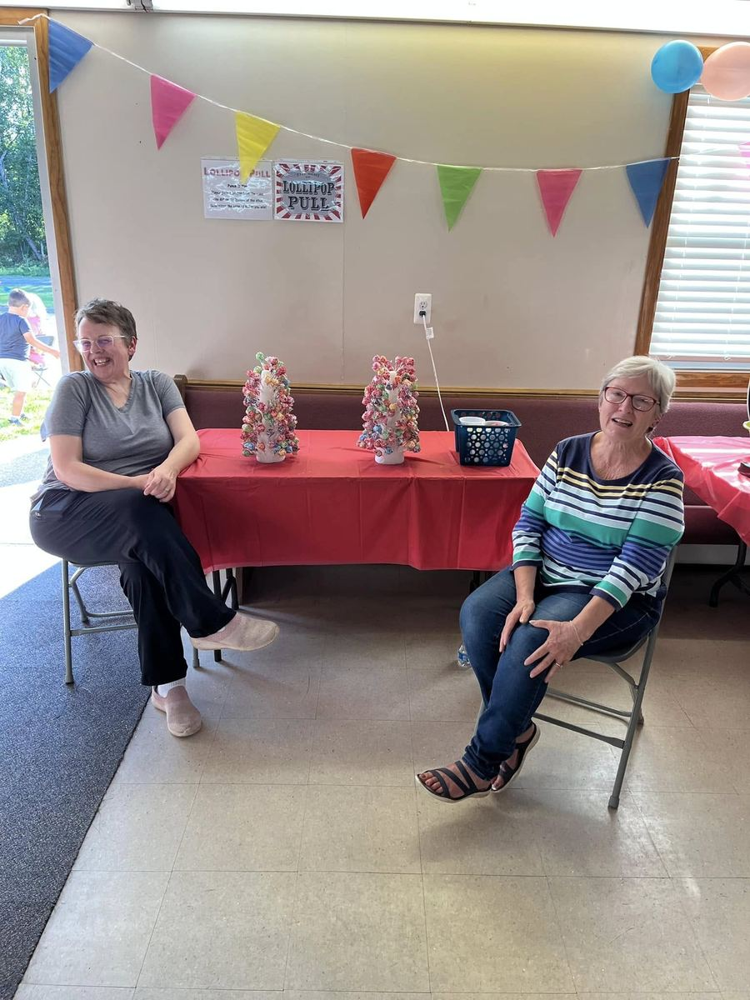
Wednesday evenings, with Kingdom Kids meeting at the same time.
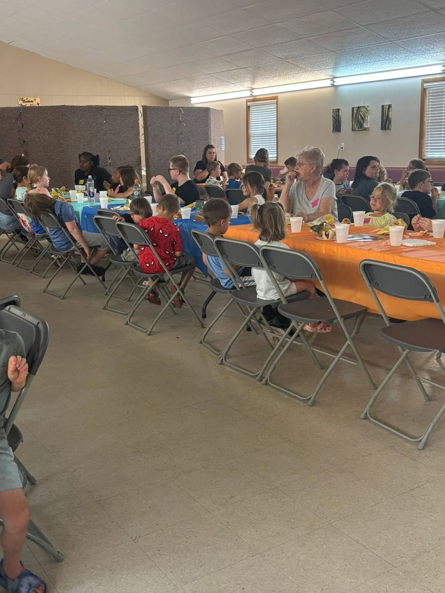
Family events, shared meals, and ways to serve our neighbors.
Calendar
The gatherings we hold through the month. Everyone is welcome.
Sanctuary · Go Kids during the service
2nd and 4th Tuesdays of the month
Open to everyone
Wednesday nights, during Bible Study
Questions about a group? Get in touch or call 231-823-4375.
Featured event
During the Sunday service we’ll walk through the roadmap for 2027, present the theme for the year, and share where God is leading The Woods.
Life at The Woods
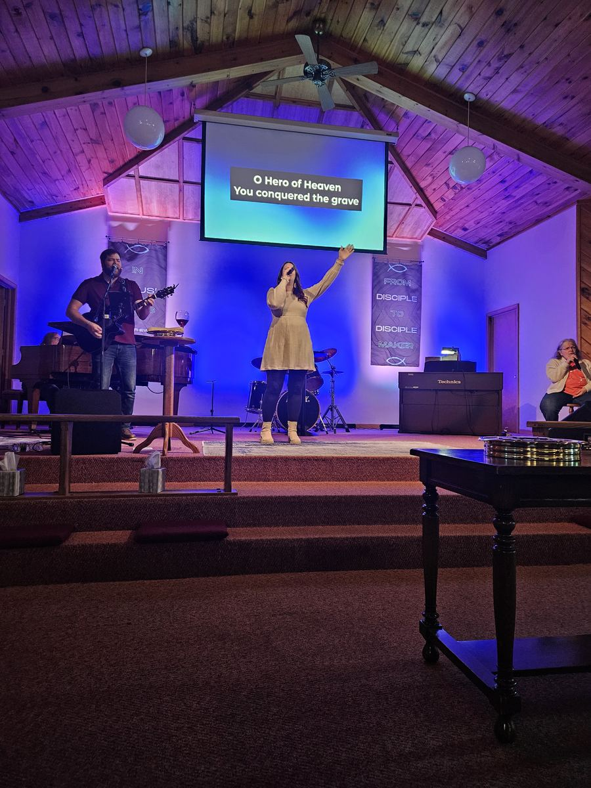
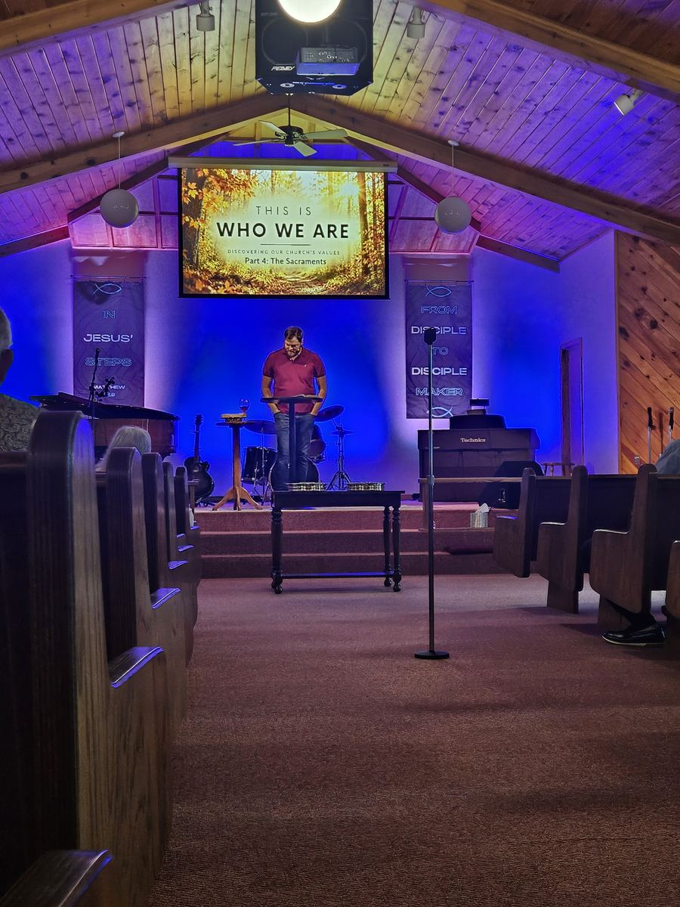
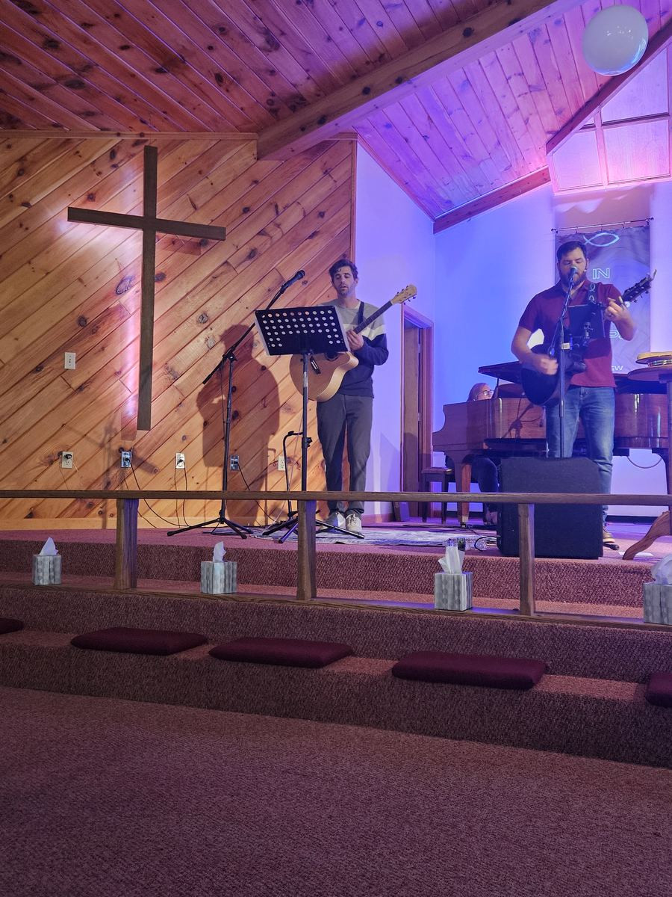
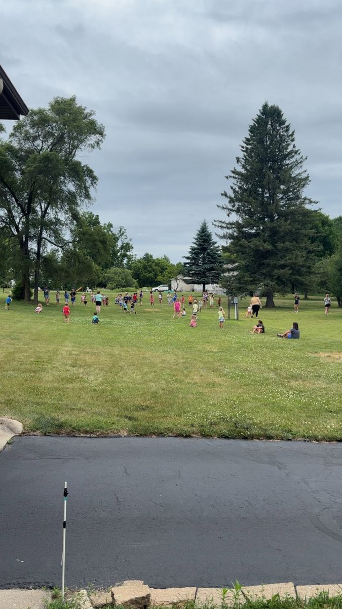
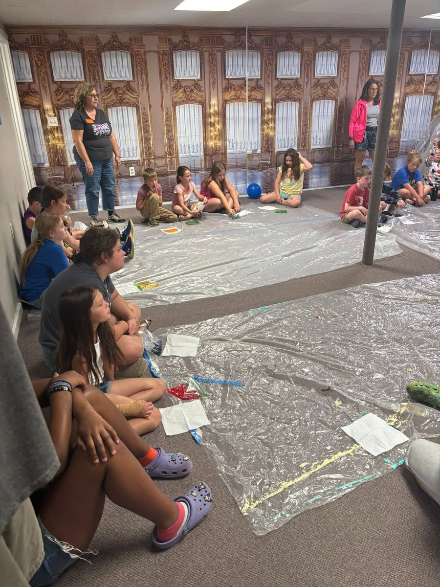
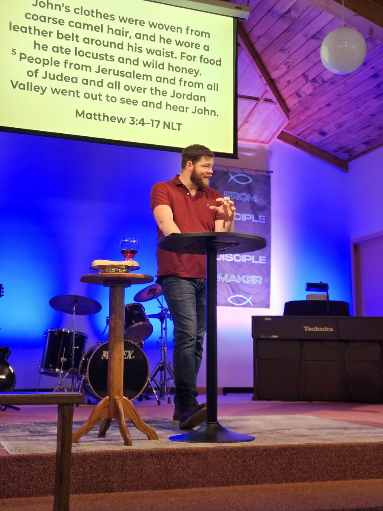
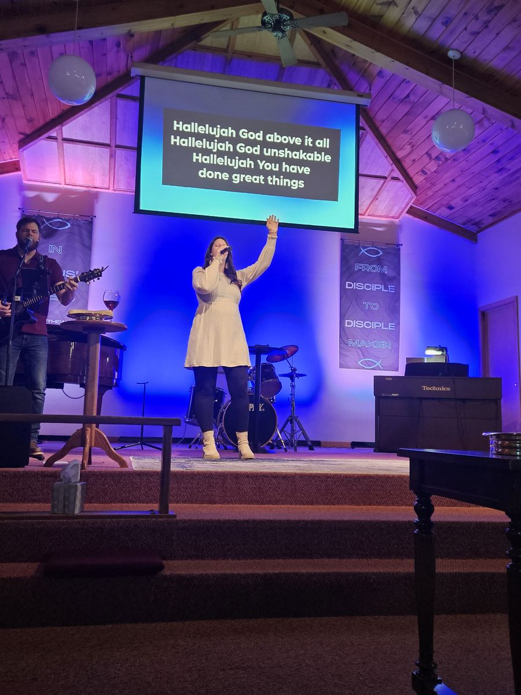
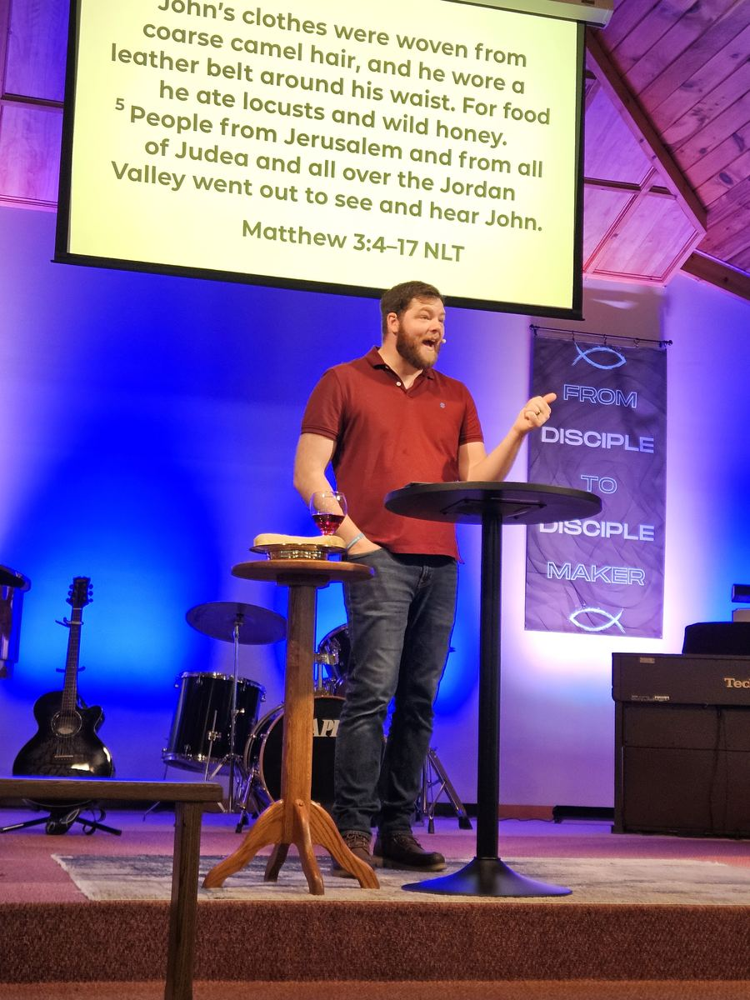
Sermons
Sunday messages are streamed live and saved so you can watch from home, at your own pace.
“They will be like a tree planted by the water that sends out its roots by the stream.”
Jeremiah 17:8
Plan your visit
Join us at 10:00 AM. Look for the white steeple on Stanwood Drive — we’ll save you a seat.